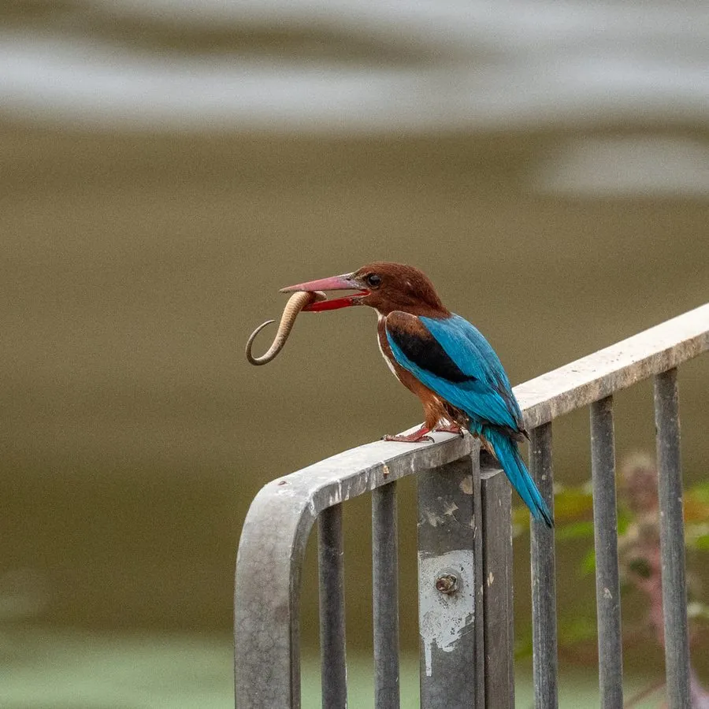

鸟类 · 动物界
白胸翡翠 Halcyon smyrnensis

头部与腹部栗褐、喉胸雪白、背翼亮蓝的翠鸟，红喙粗长醒目。常停在水边或田野的电线上，捕食鱼虾，也吃昆虫与蜥蜴。
- 分类
- 门脊索动物门纲鸟纲目佛法僧目科翠鸟科属翡翠属
- 栖息环境
- 河流、池塘、稻田、沟渠、红树林、城镇绿地与农田，偏好有土崖可挖洞的环境。
- 地理分布
- 南亚、东南亚至中国南方，包括云南、广西、广东、福建、海南、台湾等地。
- 保护级别
- IUCN 红色名录列为无危（LC）；中国列入“三有”陆生野生动物名录。
物种志
白胸翡翠体长约二十七至二十九厘米，体重七十至一百克。头部、颈侧、下体胸腹至尾下覆羽呈浓郁的巧克力褐色，喉部和前胸为纯净的白色，形成鲜明对比；背部和翼上覆羽亮蓝至绿松石色，飞羽深蓝，翼上有一块白色斑。喙粗长鲜红，虹膜深褐，脚红色。雌雄羽色相近。
它栖息于河流、池塘、稻田、沟渠、红树林与城镇绿地，常单独停栖在水边电线、枯枝或屋顶上，俯冲捕捉小鱼、虾、蟹，也捕食蚱蜢、蜥蜴甚至小鸟。与依赖清洁水体的翠鸟相比，它更能利用人工湿地和农田。繁殖期在土崖、河岸或墙基挖掘隧道状巢洞，每窝产卵四至六枚。白胸翡翠广泛分布于南亚至东南亚和中国南方，种群稳定，列入“三有”名录。
形态与习性
- 体长27–29 厘米
- 体重70–100 克
- 食性小鱼、虾蟹、昆虫与蜥蜴
- 繁殖土崖挖洞营巢，每窝 4–6 枚
- 特征白喉白胸与巧克力色腹部对比鲜明
- 保护级别IUCN 无危；“三有”动物
趣味知识
- 白色喉胸像围了一块餐巾，与栗褐色身体对比强烈。
- 能在远离水体的田野捕食昆虫和蜥蜴。
- 红喙粗壮，是翡翠属中色彩最醒目的种类之一。